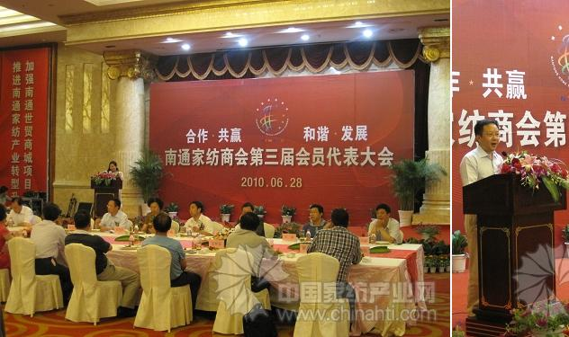

| 6月29日下午，南通家纺商会召开第三届会员代表大会，新一届理事会正式成立。中国家纺协会会长杨兆华、南通市副市长吴晓春等相关部门领导、南通家纺商会各理事单位负责人、家纺企业杰出企业家代表、金融机构代表参加了此次会议。

世界家纺看中国，中国家纺看江苏，江苏家纺看南通。经过两届理事会的共同努力，南通家纺已经成为中国家纺事业最耀眼的一颗明星。本市现已有各类家纺企业4000多家，家纺个体工商户3万多户，从业人员达20多万，年销售额超800亿元，年出口供货额超6亿美元。商会建立会员企业互助诚信担保体系，与市工商联中小企业应急互助基金紧密配合，解决了一批会员企业资金周转难的问题；积极争创名牌，目前全市家纺行业已创出4个中国名牌，3个中国驰名商标，8个江苏名牌，30个市名牌，在全市各行业中处于领先地位；进一步拓展国内外市场，面对金融危机，商会积极组织会员企业抱团发展。同时，南通家纺商会力推“重庆国际家纺城”，目前该工程正如火如荼地进行。南通家纺商会参与承办的“2009张謇杯?中国国际家用纺织产品设计大赛”，促进了南通家纺企业与国际间的交流和合作，推动了家纺产业的转型升级。
|